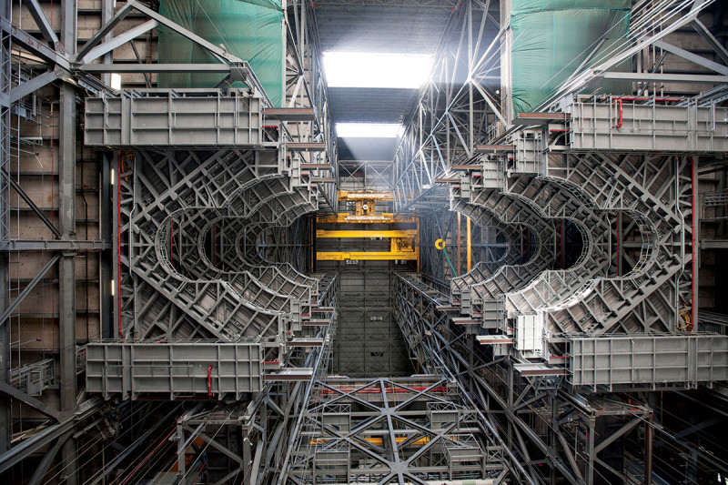
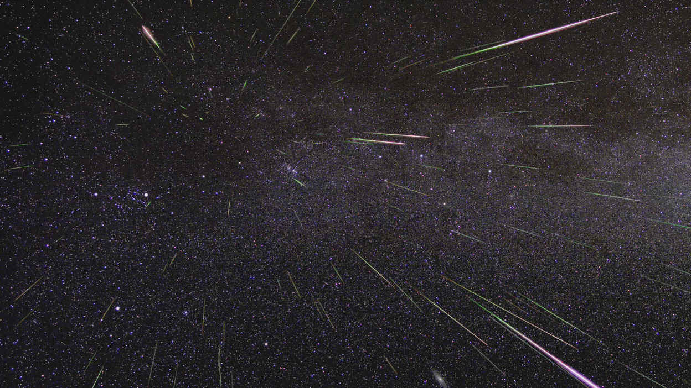
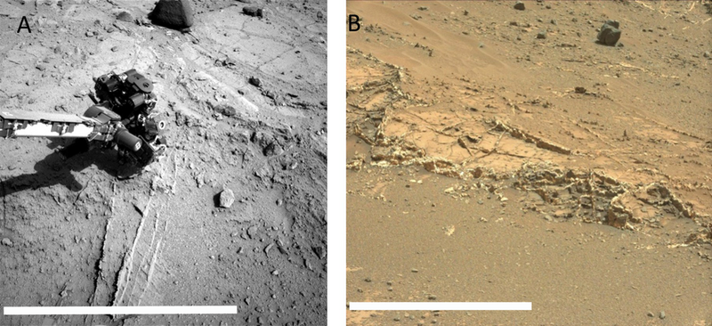
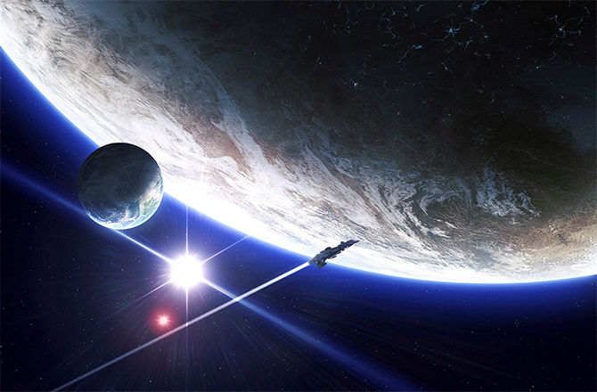
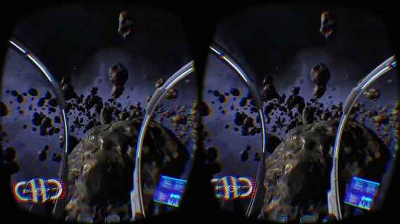

CLEARVIEW
EXPLORE

Inside NASA's towering rocket factory before deep space mission
The ten levels of work platforms in the iconic Vehicle Assembly Building at Kennedy Space Centre in Florida are ready to house NASA's Exploration Mission 1.
Did You Know?
Uranus's blue glow is due to the methane in its atmosphere, which filters out all the red light.
History
The Space Shuttle Discovery deployed the Hubble Space Telescope in August 24, 1990
History
August 6,2012 - NASA's Curiosity rover successfully landed on Mars. As large as a car, it carried an array of advanced new instruments and experiments.

Jupiter's Effect Will Make Perseid Meteor Shower One to Remember
The Perseids, the most widely observed and dependable of the annual meteor displays, will peak during the overnight hours of Thursday, Aug. 11 into the morning of Friday, Aug. 12, and this year has all the earmarks of being a spectacular show
Did You Know?
In the northern skies, you are able to see two galaxies. These are the Andromeda Galaxy (M31), and the Triangulum Galaxy (M33).
Did You Know?
There are more volcanoes on Venus than any other planet within our solar system.
History
November 26, 2011 - NASA launched Curiosity, the biggest, best equipped robot ever sent to explore another planet.

Veins on Mars were formed by evaporating ancient lakes
Mineral veins found in Mars's Gale Crater were formed by the evaporation of ancient Martian lakes, a new study has shown.
Can Time Travelers Reach the Past via Wormholes?
Astronauts already skip ahead in time, but the laws of physics seem to forbid going backward—or do they?
Did You Know?
There are three main types of galaxies out in space, and they are spiral, elliptical, and irregular.
History
In 1947, the first animals were launched into space. Fruit flies were used to study the effects of space travel on animals.
History
Explorer 1, launched on Jan. 31, 1958, was the first artificial satellite sent into space by the United States. It orbited Earth every 115 minutes, and included a cosmic ray designed to measure the radiation environment in Earth's orbit.

Kepler's 'Alien Megastructure' Star Just Got Weirder
Has Kepler revealed evidence for a technologically advanced civilization around a star only 1500 light-years away? That's one exciting, if unlikely, interpretation of recent transit data.
Did You Know?
The Whirlpool Galaxy (M51) was the very first celestial object to be identified as being spiral.
Did You Know?
When fully constructed, the Space Station will be visible for more than 90% of the Earth’s population.
History
On July 20, 1969, Astronaut Neil Armstrong took “a giant step for mankind” as he stepped onto the moon.

Virtual Space Travel Is Almost Here
Although the prospect of taking a vacay in space is thrilling, it’s also unrealistic — at least for the remainder of this century. Sure, there are reusable rockets and tourism-fitted spacecraft, but we’re still decades away from delighting in weightlessness.